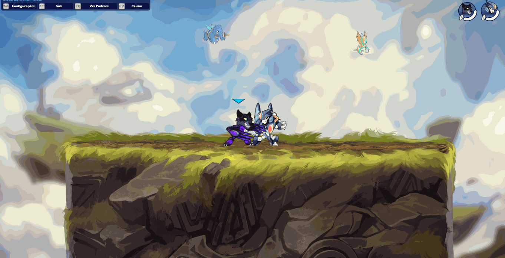
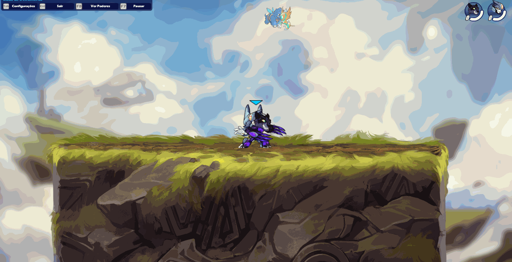
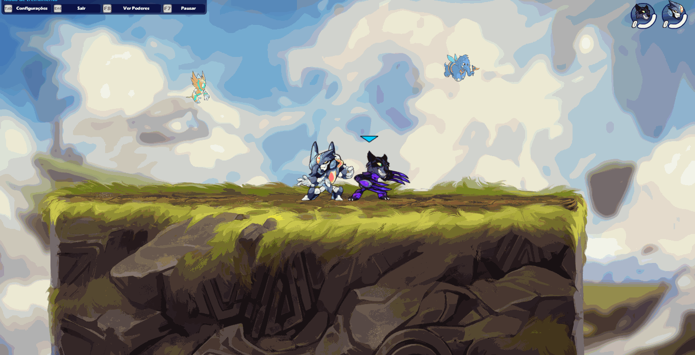
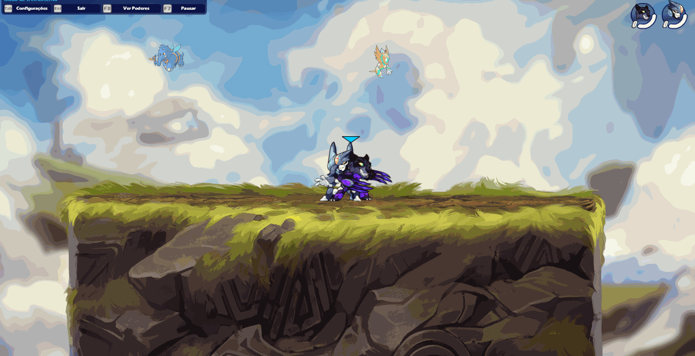
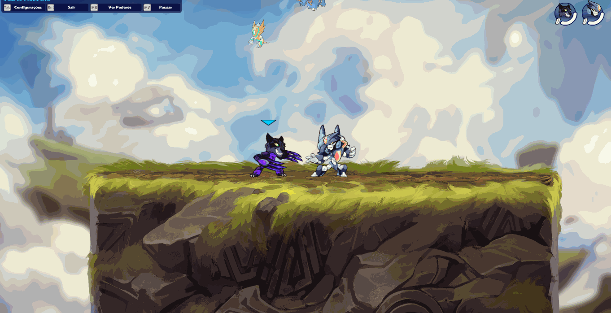
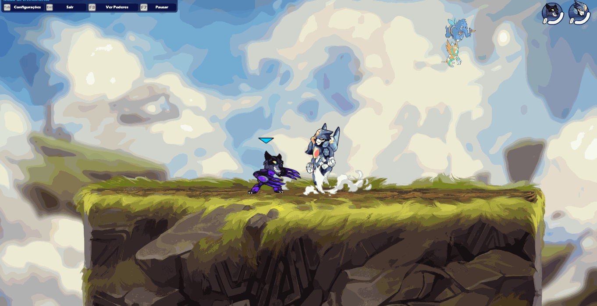

"Com as katars, o jogador se torna uma tempestade imparável, ágil e letal."
"Com as katars, o jogador se torna uma tempestade imparável, ágil e letal."
as katars são uma escolha popular entre jogadores que preferem um estilo de jogo mais ofensivo e preciso.
Um dos pontos fortes das katars é sua capacidade de controle
de espaço e mobilidade. Com ataques rápidos e precisos, os jogadores
podem manobrar rapidamente pelo campo de batalha e desferir strings e combos sem dificuldade. Além disso,
as katars também são capazes de atacar em múltiplas direções, permitindo que os jogadores surpreendam seus
oponentes.
É uma arma que pode ser muito boa para ler o seu oponente e puni-lo no seu próximo ataque,
dando a você uma vantagem gigantesca por causa do combro que
provavelmente você irá acertar em seguida.


O usuário movimenta rapidamente suas katars para cima e depois para baixo. Se atingir um oponente, o usuário cortará uma terceira vez para cima, o lançando ao ar.
O usuario se joga para frente usando as katars, caso atinja seu inimigo, ele é perfurado pela katar e jogar um pouco afastado do usuário.
O usuário salta e usa uma única katar para atacar verticalmente. Este ataque libera muito pouco knockback contra o inimigo, permitindo que o usuário conecte o ataque com outro.
O usuário rapidamente gira suas katars ao redor de seu corpo, causando knockback.
O usuário ataca com usas katars, jogando seu inimigo diagonalmente para baixo.
O usuário desce diagonalmente com seus katars, perfurando o seu oponente e lhe causando um pouco de knockback.
O usuário sobe diagonalmente com seus katars atingindo quem estiver no caminho.
O usuário desce com muita força ao solo, caso acerte o inimigo ele recebe uma quantidade considerável de knockback.